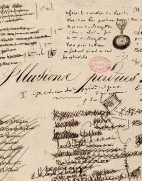

Les Illusions perdues
Honoré de BalzacCe roman sur l’ambition littéraire et le monde impitoyable de la presse est aujourd’hui considéré comme un des chefs-d’œuvre de Balzac. Lui-même le considérait comme « l'œuvre capitale dans l'œuvre ».
Détails du produit
- Format EPUB
- Protégé par LCP
- Publié en 2003 par la BNF
- ISBN 9780000000000
Modes de lecture
- Mise en page fluide
Fonctionnalités
- Table des matières
Réponses à des besoins spécifiques
Aucune information disponible.